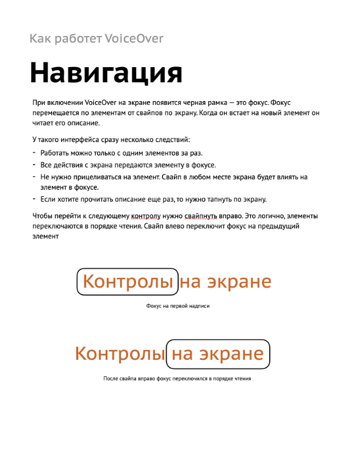
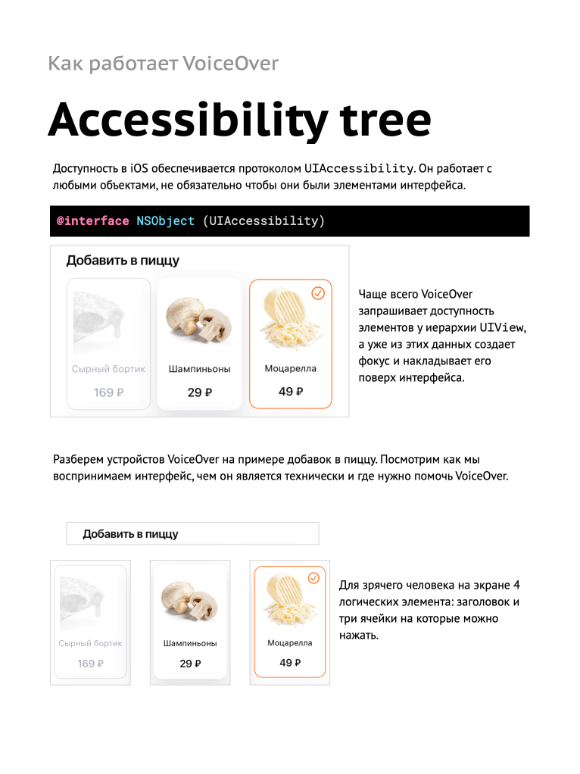
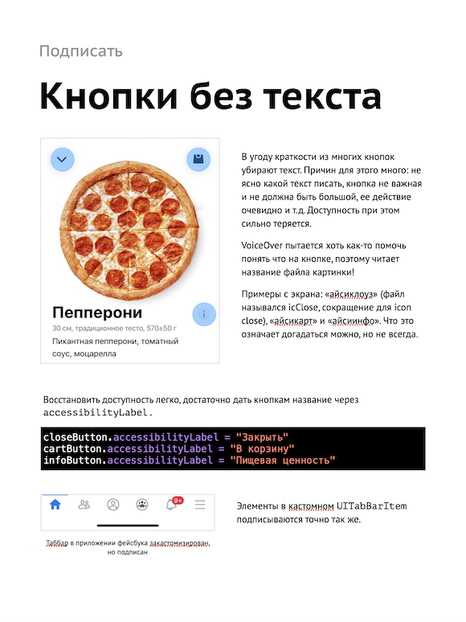
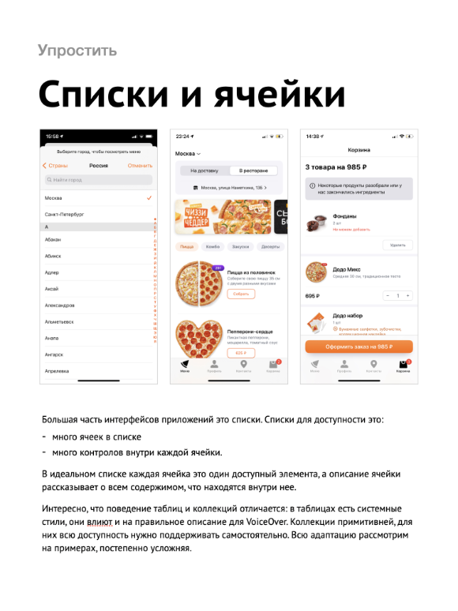
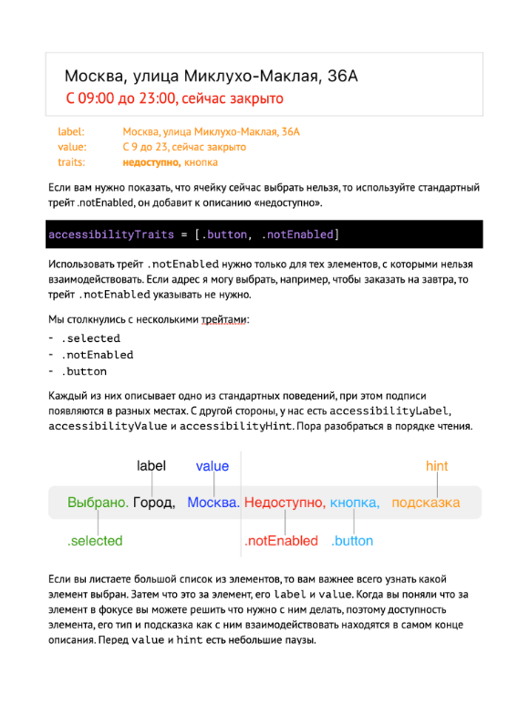
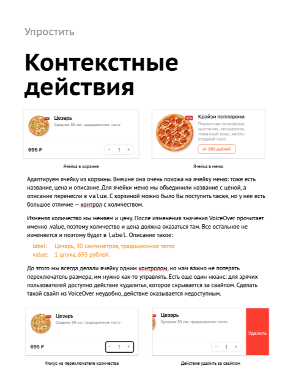
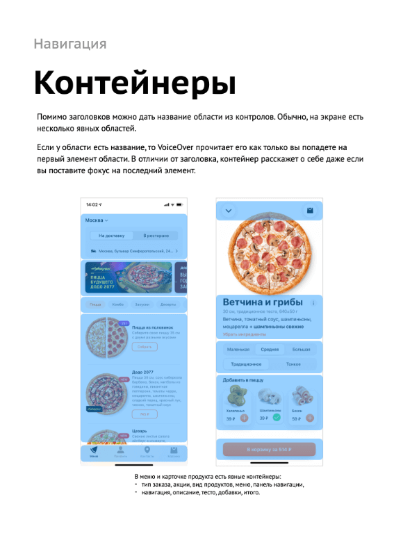
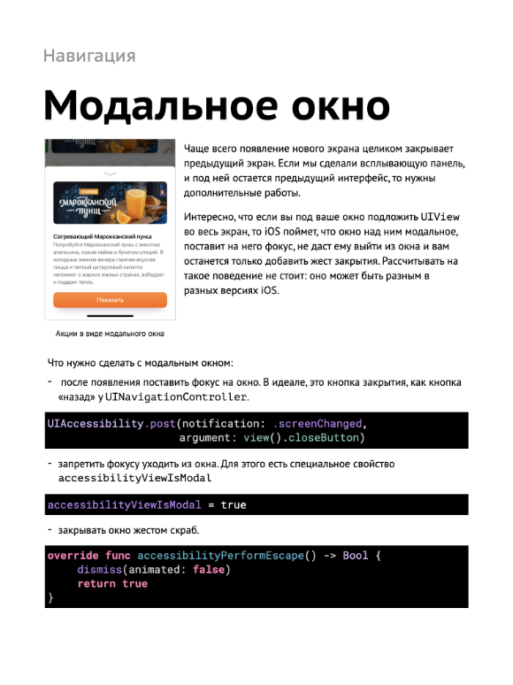
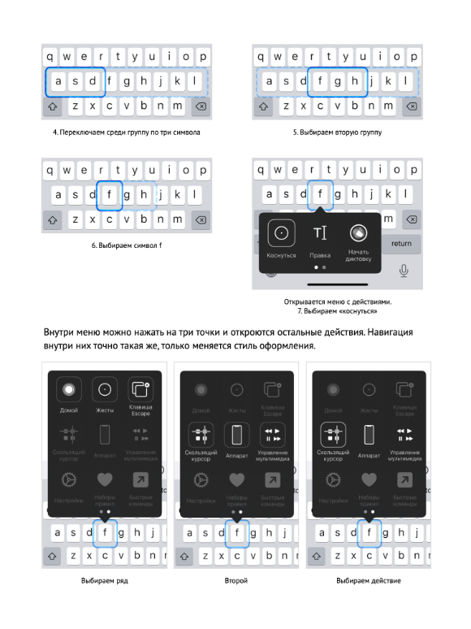

Я узнал, что приложения легко адаптировать для незрячих, но как — не понял. Начал разбираться, было непонятно все: как незрячие люди пользуются телефоном, как ведут себя отдельные контролы, как строить из этого целые сценарии. Я попробовал адаптировать приложение «Додо Пиццы»: какие-то экраны получились, какие-то нет. Что делать с нерешенными проблемами было неясно: документация слабая, статьи в интернете поверхностные, а ведь надо перепридумать все свои представления об интерфейсе, он ведь больше не графический!
Я продолжил разбираться и копить материал. Мне удалось поработать с незрячим Арменом Хатаяном, очень многому научился у него. Вместе мы написали несколько статей.
Этого все равно было мало: тему удалось раскрыть лишь чуть-чуть, а проблем, которые я не знаю как починить, оставалось еще очень много.
Спустя год Лера Курмак позвала меня рассказать про адаптацию iOS-приложений на курсе про цифровую доступность. Я готовился несколько месяцев, собрал все, что знаю, разобрался во всем, что не знаю и сделал презентацию из 500 слайдов.
В этот момент у меня появилась обратная проблема: материала очень много и я не представляю в каком формате кроме лекций их можно донести. И тут Максим Ильяхов анонсирует, что пишет новую книгу, а заодно и рассказывает как вообще книги писать. Точно, книга — то что мне нужно.
После курса я сел переделывать презентацию и свой опыт в книгу. И вот мы здесь.
Книга «Про доступность iOS»
Наверное, вы слышали про VoiceOver, но не знаете, как это работает и что с ним делать. Я покажу. Расскажу, как люди с разной инвалидностью пользуются приложениями, как проектировать для них, как адаптировать ваше приложение.
Самое сложное — это понять, как люди пользуются телефоном, как меняются их подходы к управлению телефоном, как нам проектировать для них. Поэтому подробно разбираю каждый элемент: как его описать, как с ним взаимодействовать, как объединять их и как строить из этого сценарии.
В книге 200 страниц, только в электронном виде. Подойдет всем, кто работает с IT: программистам, дизайнерам, продактам, исследователям.
Мне важно, чтобы книгу не просто скачали, а прочитали. Я буду выкладывать по одной главе, а вы сразу подхватывайте и читайте. Расписание может сдвинуться. О новых главах можно узнать в канале Dodo Mobile или у меня в Твиттере.
Начнем с того, как незрячие работают с телефоном, разберем устройство VoiceOver, научимся подписывать элементы и правильно указывать их тип. Повысим информативность: контролов станет меньше, а пользы больше.
Займемся навигацией: сначала внутри экрана, а затем и между ними. Расскажу какие паттерны и жесты есть для навигации. Закопаемся в сложные случаи: научимся работать с текстовыми полями, посмотрим на клавиатуру Брайля, разберемся, как работать с ошибками и тактильным фидбеком.
Пройдусь по всему приложению «Додо Пиццы» и расскажу про каждый экран: вы сможете не только прочитать, но и посмотреть это в действии в приложении.
Не обойдем стороной и SwiftUI: Apple проделала большую работу, чтобы упростить адаптацию приложений, посмотрим, как это влияет на код.
После VoiceOver покажу, как работает управление голосом через Voice Control и как можно даже в самых сложных жизненных обстоятельствах управлять телефоном через Switch Control.
В конце посмотрим, как работает адаптация размера текста с помощью Dynamic type. Важно не просто увеличить текст, но и освободить для него больше места, включить скролл в нужный момент. Сделаем супер резиновую верстку для телефона на основе нескольких вспомогательных классов.









Особенности
Книга-сериал: выходит частями, по одной главе в неделю. Так книжка не останется в бэклоге на прочтение, а вы сможете понемногу адаптировать свои приложения.
Полно примеров: много иллюстраций, примеров кода, ссылок на ютуб и несколько репозиториев с компонентами.
С заданиями: в конце каждой главы есть задания. Какие-то учат использовать технологии доступности, другие предлагают починить проблемы в вашем приложении.
Обширная: удалось охватить почти все стороны доступности. Разберем VoiceOver, Voice Control, Switch Control и Dynamic Type.
Наглядная: рассказываю все на примерах приложения, над которым работаю, поэтому вы можете открыть приложение «Додо Пиццы» и посмотреть, как это работает вживую.
Ваши примеры
В конце каждой главы есть небольшие задания для закрепления. Они должны помочь и плавно погрузить вас.
В ваших приложениях могут быть необычные контролы, готов помочь их адаптировать: присылайте скриншот и описание сложного контрола, я буду публично разбирать, как его адаптировать.
Мы проводим целый курс про доступность: незрячие рассказывают о своем опыте, показывают сценарии использования и рассказывают о повседевных проблемах. Исследователи учатся исследовать, дизайнеры дизайнить и программисты программировать, но уже доступные продукты. Учим вебу и iOS.
Курс подойдет как тем, кто только знакомится с доступностью, так и тем, кто уже много знает, но хотел бы все систематизировать, набраться опыта и обсудить сложные вопросы.